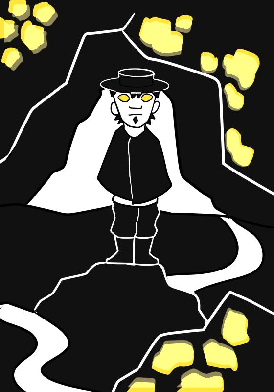

Zaori
O mito dos Zaori tem origem árabe e chegou até o Brasil, principalmente no Sul, através dos espanhóis. Na versão brasileira, são homens que nasceram na Sexta-Feira Santa, o que lhes dá a habilidade de detectar tesouros escondidos, como ouro, prata, joias e pedras preciosas. Sua característica marcante são os olhos, de um brilho inconfundível.
Entretanto, um Zaori não pode usar suas habilidades para benefício próprio, apenas para benefício de outros. Caso contrário, em algumas versões da lenda, pode trazer consequências negativas.